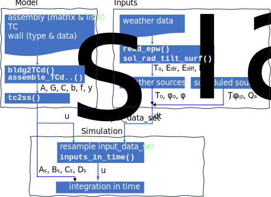
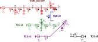

Inputs and simulation#

This notebook, which uses dm4bem module, shows a complete example of simulation for a toy model obtained by assembling. It covers (Figure 1):
Model:
given data on walls (type and data on surfaces), thermal circuits and the assembling lists or matrix;
obtain the matrices and vectors of the thermal circuit \(A, G, C, b, f, y\):
convert a folder containing the files characterizing the building into a disessambled thermal circuit (function
dm4bem.bldg2TCd());assemble the thermal circuits (functions
dm4bem.assemble_TCd_matrix()anddb4bem.assemble_lists2matrix());
transform the thermal circuit into state-space representation \(A_s, B_s, C_s, D_s, u_s\) (function
dm4bem.tc2ss()).
Inputs:
given the Typical Meteorological Years (TMY) in EnergyPlus format
.epw;read weather data: outdoor temperature \(T_o\), direct solar radiation \(E_{dir}\) and diffuse solar radiation \(E_{diff}\) (functions
dm4bem.read_epw()) and calculate the solar radiation on tilted surfaces (functiondm4bem.sol_rad_tilt_surf());determine the weather sources:
outdoor temperature \(T_o\),
solar radiation absorbed by the outdoor wall \(\Phi_o\), the indoor wall \(\Phi_o\), and the glass \(\Phi_a\).
define the scheduled inputs, such as indoor temperature set points \(T_{i,sp}\) and auxiliary flow-rates \(\dot Q_a\);
Simulation:
prepare the inputs from input description of the state-space, \(u_s\), and the input data set (function
dm4bem.inputs_in_time());integrate in time by using Euler explicit and/or implicit methods.
The complete example may be downloaded or run on mybinder from GitHub.

Figure 1. Workflow for building simulation by using
dm4bemmodule. Thedm4bemfunctions are in bold letters.
import numpy as np
import pandas as pd
import matplotlib.pyplot as plt
import dm4bem
Model#
Thermal circuits#
Consider the disassembled thermal circuits shown in Figure 2 that we want to assemble as shown in Figure 3 and then obtain the state-space representation. The model is described in Jupyter Notebook on Toy model house.


Figure 3. Assembling the four circuits from Figure 2 according to the assembly matrix or to the assembly lists. The dashed black arrows show the merging of nodes, e.g., node 5 of circuit ow0 (faded, because it disappears) is merged with node 0 of circuit c2 (which is kept).
The thermal circuits are described in a folder (see section Description of the folder containing the circuits in Jupyter Notebook on Disassembled thermal circuits from folder describing the building).
State-space representation#
The steps to obtain a state-space model from disassembled thermal circuits are:
Obtain the disassambled set of thermal circuits from data given in a folder (link).
Assemble the set of thermal circuits.
Transform the thermal circuit into state-space representation.
# Disassembled thermal circuits
folder_bldg = './pd/bldg'
TCd = dm4bem.bldg2TCd(folder_bldg,
TC_auto_number=True)
# Assembled thermal circuit
ass_lists = pd.read_csv(folder_bldg + '/assembly_lists.csv')
ass_matrix = dm4bem.assemble_lists2matrix(ass_lists)
TC = dm4bem.assemble_TCd_matrix(TCd, ass_matrix)
We can change the values of the conductances and the capacities from the thermal circuit.
# TC['G']['c3_q0'] = 1e3 # Kp, controler gain
# TC['C']['c2_θ0'] = 0 # indoor air heat capacity
# TC['C']['c1_θ0'] = 0 # glass (window) heat capacity
The state-space representation is obtained from the thermal circuit (described by the matrices \(A\), \(G\), \(C\) and the vectors \(b\), \(f\), and \(y\)).
{kind=link}
# State-space
[As, Bs, Cs, Ds, us] = dm4bem.tc2ss(TC)
us
c1_q0 To
c2_q0 To
c3_q0 Ti_sp
ow0_q0 To
c1_θ0 Φa
c2_θ0 Qa
ow0_θ0 Φo
ow0_θ4 Φi
dtype: object
In state-space representation [As, Bs, Cs, Ds, us]:
As: state (or system) matrix;Bs: input matrix;Cs: output matrix;Ds: feedthrough (or feedforward) matrix;us: correspondence between:the branches (e.g.
c1_q0for circuit c1 branch q0) and the symbol of the temperature source (e.g.To, see thermal circuit);the nodes (e.g.
c1_θ0for circuit c1 node θ0) and the symbol of flow-rate source (e.g.Φa, see thermal circuit).
Time step and settling time#
The eigenvalues analysis of the state matrix yields:
maximum time step for Euler explicit method: \(\Delta t_{max} = 2 \ \mathrm{min} (-1 / \lambda_i)\), where \(\lambda\) is the vector of eigenvalues of the state matrix \(A_s\) and \(T_i = -1 / \lambda_i\) are the time constants;
minimum settling time: \(t_{settle} = 4 \ \mathrm{max} (-1 / \lambda_i\)).
λ = np.linalg.eig(As)[0] # eigenvalues of matrix As
dt_max = 2 * min(-1. / λ) # max time step for Euler explicit stability
print(f'dt_max = {dt_max:.1f} s')
dt = dm4bem.round_time(dt_max)
dm4bem.print_rounded_time('dt', dt)
dt_max = 498.6 s
dt = 300 s = 5.0 min
t_settle = 4 * max(-1. / λ)
# duration: next multiple of 3600 s that is larger than t_settle
duration = np.ceil(t_settle / 3600) * 3600
dm4bem.print_rounded_time('duration', duration)
duration = 176400 s = 49.0 h
Inputs for step response#
The step response consists of the time response of the system when one or more inputs change instantaneously at time \(t = 0\). The input data set of the system contains the temperature (\(T_o\), \(T_{i,sp}\)) and flow-rate (\(\Phi_o\), \(\Phi_i\), \(\Phi_a\), \(\dot{Q}_a\)) sources.
The input vector in time, \(u\), may have repeated values; in our thermal circuit, the outdoor temperature source \(T_o\) is on three branches: \(c_1 \_q_0\), \(c_2\_q_0\) and \(ow_0\_q_0\).
The input vector in time, \(u\), is a DataFrame with time as index (note that the year is 2000 by convention); its columns are the values of the inputs arranged in the order given by the vector \(u_s\) (obtained in the state-space representation from the sources indicated by symbols in vectors \(b\) and \(f\) of the thermal circuit). The transformation from input data set to the input vector in time is done by the function inputs_in_time() from dm4bem module.
# Create input_data_set
# ---------------------
# time vector
n = int(np.floor(duration / dt)) # number of time steps
# Create a DateTimeIndex starting at "00:00:00" with a time step of dt
time = pd.date_range(start="2000-01-01 00:00:00",
periods=n, freq=f"{int(dt)}S")
To = 10.0 * np.ones(n)
Ti_sp = 20.0 * np.ones(n)
Φa = 0.0 * np.ones(n)
Qa = Φo = Φi = Φa
# key <- symbol in b and f of thermal circuit TC
# value <- time series of the source
data = {'To': To, 'Ti_sp': Ti_sp, 'Qa': Qa, 'Φo': Φo, 'Φi': Φi, 'Φa': Φa}
input_data_set = pd.DataFrame(data, index=time)
input_data_set
| To | Ti_sp | Qa | Φo | Φi | Φa | |
|---|---|---|---|---|---|---|
| 2000-01-01 00:00:00 | 10.0 | 20.0 | 0.0 | 0.0 | 0.0 | 0.0 |
| 2000-01-01 00:05:00 | 10.0 | 20.0 | 0.0 | 0.0 | 0.0 | 0.0 |
| 2000-01-01 00:10:00 | 10.0 | 20.0 | 0.0 | 0.0 | 0.0 | 0.0 |
| 2000-01-01 00:15:00 | 10.0 | 20.0 | 0.0 | 0.0 | 0.0 | 0.0 |
| 2000-01-01 00:20:00 | 10.0 | 20.0 | 0.0 | 0.0 | 0.0 | 0.0 |
| ... | ... | ... | ... | ... | ... | ... |
| 2000-01-03 00:35:00 | 10.0 | 20.0 | 0.0 | 0.0 | 0.0 | 0.0 |
| 2000-01-03 00:40:00 | 10.0 | 20.0 | 0.0 | 0.0 | 0.0 | 0.0 |
| 2000-01-03 00:45:00 | 10.0 | 20.0 | 0.0 | 0.0 | 0.0 | 0.0 |
| 2000-01-03 00:50:00 | 10.0 | 20.0 | 0.0 | 0.0 | 0.0 | 0.0 |
| 2000-01-03 00:55:00 | 10.0 | 20.0 | 0.0 | 0.0 | 0.0 | 0.0 |
588 rows × 6 columns
Note that input_data_set contains the time series of the inputs specified by symbols in the vectors \(b\) and \(f\) of the thermal circuit. The names of the columns the keys of data, which need to correspond to the symbols indicated in vectors \(b\) and \(f\) of the thermal circuit. The values of data are time series given by the variables of the respective keys.
The input vector in time u is obtained from correspondence between branches / nodes and temperature / flow sources given in us and the time series given in input_data_set.
# Get input u from input_data_set
u = dm4bem.inputs_in_time(us, input_data_set)
u
| c1_q0 | c2_q0 | c3_q0 | ow0_q0 | c1_θ0 | c2_θ0 | ow0_θ0 | ow0_θ4 | |
|---|---|---|---|---|---|---|---|---|
| 2000-01-01 00:00:00 | 10.0 | 10.0 | 20.0 | 10.0 | 0.0 | 0.0 | 0.0 | 0.0 |
| 2000-01-01 00:05:00 | 10.0 | 10.0 | 20.0 | 10.0 | 0.0 | 0.0 | 0.0 | 0.0 |
| 2000-01-01 00:10:00 | 10.0 | 10.0 | 20.0 | 10.0 | 0.0 | 0.0 | 0.0 | 0.0 |
| 2000-01-01 00:15:00 | 10.0 | 10.0 | 20.0 | 10.0 | 0.0 | 0.0 | 0.0 | 0.0 |
| 2000-01-01 00:20:00 | 10.0 | 10.0 | 20.0 | 10.0 | 0.0 | 0.0 | 0.0 | 0.0 |
| ... | ... | ... | ... | ... | ... | ... | ... | ... |
| 2000-01-03 00:35:00 | 10.0 | 10.0 | 20.0 | 10.0 | 0.0 | 0.0 | 0.0 | 0.0 |
| 2000-01-03 00:40:00 | 10.0 | 10.0 | 20.0 | 10.0 | 0.0 | 0.0 | 0.0 | 0.0 |
| 2000-01-03 00:45:00 | 10.0 | 10.0 | 20.0 | 10.0 | 0.0 | 0.0 | 0.0 | 0.0 |
| 2000-01-03 00:50:00 | 10.0 | 10.0 | 20.0 | 10.0 | 0.0 | 0.0 | 0.0 | 0.0 |
| 2000-01-03 00:55:00 | 10.0 | 10.0 | 20.0 | 10.0 | 0.0 | 0.0 | 0.0 | 0.0 |
588 rows × 8 columns
Note the columns of u are the names of the branches and of the nodes from the thermal circuit.
Simulation#
Step response#
Initial conditions#
# Initial conditions
θ_exp = pd.DataFrame(index=u.index) # empty df with index for explicit Euler
θ_imp = pd.DataFrame(index=u.index) # empty df with index for implicit Euler
θ0 = 0.0 # initial temperatures
θ_exp[As.columns] = θ0 # fill θ for Euler explicit with initial values θ0
θ_imp[As.columns] = θ0 # fill θ for Euler implicit with initial values θ0
Time integration#
The formula for Euler integration is:
for forward (or explicit) and:
for backward (or implicit) integration.
I = np.eye(As.shape[0]) # identity matrix
for k in range(n - 1):
θ_exp.iloc[k + 1] = (I + dt * As)\
@ θ_exp.iloc[k] + dt * Bs @ u.iloc[k]
θ_imp.iloc[k + 1] = np.linalg.inv(I - dt * As)\
@ (θ_imp.iloc[k] + dt * Bs @ u.iloc[k + 1])
Output values#
Once the state variables, i.e. the temperatures in nodes that have capacities \(\theta_C\), are found, the temperatures in the other nodes are:
# outputs
y_exp = (Cs @ θ_exp.T + Ds @ u.T).T
y_imp = (Cs @ θ_imp.T + Ds @ u.T).T
# plot results
y = pd.concat([y_exp, y_imp], axis=1, keys=['Explicit', 'Implicit'])
# Flatten the two-level column labels into a single level
y.columns = y.columns.get_level_values(0)
y.plot()
plt.xlabel('Time')
plt.ylabel('Temperature, $θ_i$ / °C')
plt.title(f'Time step: $dt$ = {dt:.0f} s; $dt_{{max}}$ = {dt_max:.0f} s')
plt.show()
Figure 4. Step response by using Euler explicit and Euler implicit integration methods.
Simulation with weather data#
Start and end date-time#
The simulation will be done from date_start to date_end indicated in the format MM-DD HH:MM:SS (month-day hour:minute:second).
date_start = '02-01 12:00:00'
date_end = '02-07 18:00:00'
The weather data are for a year. The choice of 2000 for the year is arbitrary; it used in order to respect the format YYYY-MM-DD HH:MM:SS.
date_start = '2000-' + date_start
date_end = '2000-' + date_end
print(f'{date_start} \tstart date')
print(f'{date_end} \tend date')
2000-02-01 12:00:00 start date
2000-02-07 18:00:00 end date
Input data set#
Weather data#
Dynamic simulation needs time series of weather data for air temperature, direct solar radiation on a normal surface and diffuse solar radiation on an horizontal surface (see the tutorial on weather data and solar radiation and weather file FRA_Lyon.074810_IWEC.epw).
file_weather = '../weather_data/FRA_Lyon.074810_IWEC.epw'
[data, meta] = dm4bem.read_epw(file_weather, coerce_year=None)
weather = data[["temp_air", "dir_n_rad", "dif_h_rad"]]
del data
From the weather data, we select:
hourly outdoor air temperature, °C;
hourly solar direct normal irradiance (or beam radiation), W/m²;
hourly solar diffuse horizontal irradiance (or diffuse sky radiation), W/m²,
The yearly weather data set is from different years. By convenction, we set the year at 2000. Then, we select the data from start date to end date and resample the weather data to the time step used in simulation.
weather.index = weather.index.map(lambda t: t.replace(year=2000))
weather = weather.loc[date_start:date_end]
Temperature sources#
The set of temperature sources contains:
\(T_o\) - outdor temperature;
\(T_{i, sp}\) - indoor temperature set-point.
For indoor temperature set-point \(T_{i, sp}\) let’s consider day time (from 6:00 to 22:00) and night time (the rest of the day) values.
# Temperature sources
To = weather['temp_air']
Ti_day, Ti_night = 20, 16
Ti_sp = pd.Series(20, index=To.index)
Ti_sp = pd.Series(
[Ti_day if 6 <= hour <= 22 else Ti_night for hour in To.index.hour],
index=To.index)
Flow-rate sources#
Total solar irradiance on the outdoor wall
For the surface orientation of the outdoor wall, given by slope, azimuthand latitude, and the albedo of the surface in front of the wall, by using the weather data, we can calculate the direct, diffuse irradiance, and reflected irradiance solar irradiance, in W/m², on a tilted surface. The total irradiance, \(E_{tot}\), is the sum of direct, diffuse and reflected irradiances.
# total solar irradiance
wall_out = pd.read_csv(folder_bldg + '/walls_out.csv')
w0 = wall_out[wall_out['ID'] == 'w0']
surface_orientation = {'slope': w0['β'].values[0],
'azimuth': w0['γ'].values[0],
'latitude': 45}
rad_surf = dm4bem.sol_rad_tilt_surf(
weather, surface_orientation, w0['albedo'].values[0])
Etot = rad_surf.sum(axis=1)
Flow-rate sources
\(\Phi_o\): solar (i.e. short wave) radiation, in W, absorbed by the outdoor surface of the wall:
where:
\(\alpha_{w,SW}\) is the absortion coefficient of the outdoor surface of the wall in short wave, \(0 \leqslant \alpha_{w,SW} \leqslant 1\);
\(S_w\) - surface area of the wall, m²;
\(E_{tot}\) - total solar irradiation on the wall, W/m².
\(\Phi_i\): short wave (i.e. solar) radiation, in W, absorbed by the indoor surfaces of the wall:
where:
\(\tau_{g,SW}\) is the transmission coefficient of the window glass, \(0 \leqslant \tau_{g,SW} \leqslant 1\);
\(\alpha_{w,SW}\) - absortion coefficient of the indoor surface of the wall in short wave, \(0 \leqslant \alpha_{w,SW} \leqslant 1\);
\(S_g\) - surface area of the window glass, m²;
\(E_{tot}\) - total solar radiation intensity on the wall, W/m².
\(\Phi_a\): short wave (i.e. solar) radiation, in W, absorbed by the window glass:
where:
\(\alpha_{g,SW}\) is the absortion coefficient of the glass window in short wave, \(0 \leqslant \alpha_{w,SW} \leqslant 1\);
\(S_g\) - surface area of the glass window, m²;
\(E_{tot}\) - total solar irradiation on the wall, W/m².
\(\dot{Q}_a\): auxiliary heat flows (from occupants, electrical devices, etc.), in W.
# Window glass properties
α_gSW = 0.38 # short wave absortivity: reflective blue glass
τ_gSW = 0.30 # short wave transmitance: reflective blue glass
S_g = 9 # m2, surface area of glass
# Flow-rate sources
# solar radiation
Φo = w0['α1'].values[0] * w0['Area'].values[0] * Etot
Φi = τ_gSW * w0['α0'].values[0] * S_g * Etot
Φa = α_gSW * S_g * Etot
# auxiliary (internal) sources
Qa = pd.Series(0, index=To.index)
Input data set#
# Input data set
input_data_set = pd.DataFrame({'To': To, 'Ti_sp': Ti_sp,
'Φo': Φo, 'Φi': Φi, 'Qa': Qa, 'Φa': Φa,
'Etot': Etot})
Time integration#
Input vector#
Time integration requires the input vector \(u\) which is obtained from the input data set (i.e., sources), arranged according to the order given by \(u_s\) from the state-space representation.
# Resample hourly data to time step dt
input_data_set = input_data_set.resample(
str(dt) + 'S').interpolate(method='linear')
# Get input from input_data_set
u = dm4bem.inputs_in_time(us, input_data_set)
Initial conditions#
# initial conditions
θ0 = 20.0 # initial temperatures
θ_exp = pd.DataFrame(index=u.index)
θ_exp[As.columns] = θ0 # Fill θ with initial valeus θ0
Numerical integration#
Explicit Euler integration in time,
where \(k = 0, ... , n - 1\),
# time integration
I = np.eye(As.shape[0]) # identity matrix
for k in range(u.shape[0] - 1):
θ_exp.iloc[k + 1] = (I + dt * As)\
@ θ_exp.iloc[k] + dt * Bs @ u.iloc[k]
started from initial conditions, yields the time variation of state variable \(\theta\), from which we obtain the variation of the output (i.e. indoor temperature):
and the variation of the heat flow of the HVAC system:
where \(K_p\) is the gain of the P-controller and \(T_{i,sp}\) is the HVAC-setpoint for the indoor temperature.
# outputs
y = (Cs @ θ_exp.T + Ds @ u.T).T
Kp = TC['G']['c3_q0'] # W/K, controller gain
S = 3 * 3 # m², surface area of the toy house
q_HVAC = Kp * (u['c3_q0'] - y['c2_θ0']) / S # W/m²
In order to plot the results, from the data let’s select the outdoor temperature \(T_o\), the indoor temoerature \(\theta_i\), the total solar irradiance \(E_{tot}\), and the specific thermal load \(q_{HVAC}\).
Results#
data = pd.DataFrame({'To': input_data_set['To'],
'θi': y['c2_θ0'],
'Etot': input_data_set['Etot'],
'q_HVAC': q_HVAC})
fig, axs = plt.subplots(2, 1)
data[['To', 'θi']].plot(ax=axs[0],
xticks=[],
ylabel='Temperature, $θ$ / °C')
axs[0].legend(['$θ_{outdoor}$', '$θ_{indoor}$'],
loc='upper right')
data[['Etot', 'q_HVAC']].plot(ax=axs[1],
ylabel='Heat rate, $q$ / (W·m⁻²)')
axs[1].set(xlabel='Time')
axs[1].legend(['$E_{total}$', '$q_{HVAC}$'],
loc='upper right')
axs[0].set_title(f'Time step: $dt$ = {dt:.0f} s;'
f'$dt_{{max}}$ = {dt_max:.0f} s')
plt.show()
print(f'Min. indoor temperature: {data["θi"].min():.1f} °C')
print(f'Max. indoor temperature: {data["θi"].max():.1f} °C')
max_load = data['q_HVAC'].max()
max_load_index = data['q_HVAC'].idxmax()
print(f"Max. load: {max_load:.1f} W at {max_load_index}")
print(f"Energy consumption: {(data['q_HVAC'] * dt).sum() / (3.6e6):.1f} kWh")
Min. indoor temperature: 2.0 °C
Max. indoor temperature: 23.5 °C
Max. load: 0.0 W at 2000-02-01 12:00:00+01:00
Energy consumption: 0.0 kWh
Figure 5. Simulation in free-running with weather data using Euler explicit method of integration. a) Indoor and outdoor temperatures. b) Solar and HVAC heat flow rates.
Pyhton script#
The script pd/pd05simulation.py implements the workflow presented in this notebook. In order to run this script (in the environment):
Create a working directory, e.g.
pdDownload dm4bem module and save it the working directory.
Create subfolder
/bldgin the working directory.Download TC0, TC1, TC2, TC3, and wall_out (of wall_types), and asssembly lists files and save them in subfolder
/bldg.Create subfolder
/weather_data.Download weather file FRA_Lyon.074810_IWEC.epw and save it in subfolder
/weather_data.Run the script.
The files may be downloaded or run on mybinder from GitHub.
%%capture --no-display
%cd pd
%run pd05simulation.py
%cd -
Figure 6. Results of script
pd05simulation.py.
Discussion#
See the Discussion section of notebook on Toy model house / Steady-state and step response.
Free-floating or P-controller
After the assembling of the thermal circuit with the function dm4bem.assemble_TCd_matrix, change the gain of the P-controller by setting the value of TC['G']['c3_q0']:
\(K_p = 0\): no controller (i.e., free-floating);
\(K_p = 10^3\): good balance between precision and time-step;
\(K_p = 10^2\): time step is larger but the precision is lower;
\(K_p = 10^4\): precision is good but the time step is very small.
Negligible small capacities
After the assembling of the thermal circuit with the function dm4bem.assemble_TCd_matrix, set the indoor air capacity to zero, TC['C']['c2_θ0'] = 0 and the glass capacity to zero, TC['C']['c1_θ0'] = 0 one-by-one and both in the same time. Note the time step and the precision of the controller in each case.
References#
C. Ghiaus (2013). Causality issue in the heat balance method for calculating the design heating and cooling loads, Energy 50: 292-301, , open access preprint: HAL-03605823
C. Ghiaus (2021). Dynamic Models for Energy Control of Smart Homes, in S. Ploix M. Amayri, N. Bouguila (eds.) Towards Energy Smart Homes, Online ISBN: 978-3-030-76477-7, Print ISBN: 978-3-030-76476-0, Springer, pp. 163-198, open access preprint: HAL 03578578
J.A. Duffie, W. A. Beckman, N. Blair (2020). Solar Engineering of Thermal Processes, 5th ed. John Wiley & Sons, Inc. ISBN 9781119540281
Réglementation Thermique 2005. Méthode de calcul Th-CE.. Annexe à l’arrêté du 19 juillet 2006
H. Recknagel, E. Sprenger, E.-R. Schramek (2013) Génie climatique, 5e edition, Dunod, Paris. ISBN 978-2-10-070451-4
J.R. Howell et al. (2021). Thermal Radiation Heat Transfer 7th edition, ISBN 978-0-367-34707-0, A Catalogue of Configuration Factors
J. Widén, J. Munkhammar (2019). Solar Radiation Theory, Uppsala University